9 7. Multilevel models.
Multilevel models are used to model data that falls naturally into groups. In these cases we can partition variation (i) into data level variation and (ii) into between-groups variation. The data level variation is captured by SD, as in ordinary single-level regression, and the between-groups variation is really the SD of group means. So if we have 100 test scores from 10 schools, then this between-schools variation is calculated as standard deviation from 10 estimated school mean scores (and the data level variation comes from the 100 tests). Technically, this means that we treat the school means as parameters to be estimated on data (individual test scores), but at the same time we also treat the school means as data in their own right, which we use to estimate a meta-parameter, \(\sigma_{school}\) (the SD of school means). Thus, in their data guise, we model the school means as sampled from a gaussian meta-distribution of school means (called “meta-prior”).
The beauty of this approach is that during fitting of the model, information flows from the data into all levels of the model (individual level and the school level) and also moves between the levels. So the parameters for each school are informed both by data coming from this school, and data coming from all other schools. This way we use data more efficiently.
9.1 7.1. ANOVA-like models for fighting false alarms
We have a table containing i rows, where for each row corresponds to (1) a single pupils math score, (2) his/hers school name, (3) sex and (4) as a school-level variable the number of pupils in that school. There are j schools in this four-column table and each pupil has a single score from a single school. For brevity lets name the columns as follows:
y - score
sch - school name (index) as a factor
We start, again, by simply modeling y as a normal distribution. This model says that the scores are randomly drawn from a normal distribution of scores, whose parameters are determined on the actual scores.
The model looks like this
\[ y_i \sim N(\mu, \sigma)\] \[\mu = \alpha\] or written more concisely in a single line:
\[ y_i \sim N(\alpha, \sigma)\]
Here we simply redefine \(\mu\) as \(\alpha\) or intercept.1 This is mathematically meaningless, but will come handy later, when we start adding predictors to the model. N stands for Normal distribution, plus priors for the 2 parameters (\(\mu\) and \(\sigma\)). In R modelling language this can be written as \(y \sim 1\). This model knows nothing about pupils belonging to different schools and it is the complete pooling model.
The opposite, no-pooling model, models the mean of each schools score completely independently from other schools (but it may or may not model the pupil level SD as identical across the scools, a.k.a. as full data average):
\[within ~school~ j: y \sim N(\alpha_j, \sigma_y)\]
This mathematical description means that there are as many models as there are schools (thus j models), each with its own \(\mu\), which is renamed as \(\alpha\) or intercept in the regression language. \(\alpha_j\) means that there are j different alpha coefficients, each standing in for a mean score of a different school. There is also a single data level SD of all scores for all schools, \(\sigma_y\), which is the same thing as the \(\sigma\) in the previous model.
In R language this model is \(y \sim 0 + sch\).
And the version where both mean and SD are modelled completely independently looks like this:
\[y_i \sim N(\alpha_j, \sigma_{y[j]})\] or \(bf(y \sim 0 + sch, sigma \sim 0 + sch)\) (This version works in brms).
If there are plenty of data for each school, then this sort of model would be good for assessing the mean test result for each school.
But what, if some schools have only a few datapoints? Then there we will see some schools, where only a few students took the test and where the results might not be representative of the actual quality of the school. We are wary of extreme results from such schools, but we do not want to ignore them either. What we can do instead, is to build a model where estimates of the mean scores for all schools are shrunk towards the mean score of all schools. We do this by adding another 2nd level regression model.
\[y_i \sim N(\alpha_j, \sigma_y)\] \[\alpha_j \sim N(\mu_{\alpha}, \sigma_{\alpha})\]
in brms this 2-level model reads as \(y \sim 0 + (1 \vert sch)\)
The second row of this model says that the school-specific mean scores themselves come from a normally distributed infinite population of mean scores.
This model has j + 3 parameters:
j \(\alpha\)-s - j mean scores, one for each school,
\(\sigma_y\) - SD of the scores (showing the distribution of the scores),
\(\sigma_{\alpha}\) - SD of the school-specific mean scores, not individual scores,
\(\mu_{\alpha}\) - the mean of the j \(\alpha\) coefficients of the individual schools, which is not the mean(score), but the mean of the mean scores.
We can re-write the previous model like this:
\[y_i \sim N(\alpha + \alpha_j, \sigma_y)\] \[\alpha_j \sim N(0, \sigma_{\alpha})\]
Here we get the common mean score over all schools as \(\alpha\) and deflections from this for each individual schools (\(\alpha_j\)), which should be added together, to get the estimate for j-th school. In brms this model is \(y \sim 1 + (1 \vert sch)\). This form of the model, while mathematically equivalent, is a bit easier to fit, and arguably to work with.
To recap:
In the no-pooling model, the \(\alpha_j\)-s correspond to j school means.
With complete pooling the \(\alpha_j\)-s are all fixed at a common \(\alpha\).
In the multilevel model \(\alpha_j\)-s are assigned a probability distribution, whose 2 parameters are estimated directly from data. The distribution pulls the estimates of \(\alpha_j\) toward the mean level \(\mu_{\alpha}\), but not all the way.
If \(\sigma_{\alpha} \rightarrow \infty\), there is no pooling;
If \(\sigma_{\alpha} \rightarrow 0\), the estimates are pulled to zero, giving complete pooling.
The last 2 points mean that single-level models can be viewed as special cases of multilevel models. Thus, even if we only have 2 groups, or many of the groups have very small N, the multi-level model is at least as good as the corresponding single-level model!
One way to interpret the variation between schools, \(\sigma_{\alpha}\), is through the ratio, \(\sigma_{\alpha}/\sigma_y\). If the ratio is small, then most of the variation in scores is at the pupil level and the schools are very similar to each others. Otherwise, different schools have different mean scores. The goal of the model is to look beyond the samples of scores from each school and into the true mean ability of each schools students, as if each school contained an infinite number of test takers whose average ability is the issue.
Lets suppose that the fitted data level SD, \(\sigma_y\), is 0.74 and the SD for the mean scores, \(\sigma_{\alpha}\), is 0.33. Then we can see that to get from 0.74 to 0.33, we have to divide 0.74 with square root of 5. This means that the SD of mean scores is the same as the SD of 5 individual score measurements, and that the amount of information in this 2nd level distribution of the means is the same as that in 5 measurements within a school. Thus, a school with <5 scores, puts more information into the group-level model than into the schools own model (in the sense of providing a higher-SD estimate of the schools mean score). As a result, the mean score estimate in an N<5 school is closer to the complete-pooling estimate, and closer to the no-pooling estimate when N>5.
We can express this very same 2-level model in an alternative way by putting priors on priors, that is, by using meta-priors. With the meta-priors we assume that the scores of each school have their own distribution that partially overlaps with the other schools, and that these school-specific distributions of test scores come from a single overarching meta-distribution, defined by the meta-prior.
By using the meta prior, we turn our usual school-specific prior, over which the meta-prior arches, into an adaptive prior. For this we take the school-specific prior \(\alpha_{j} \sim normal(0, .)\), where the dot stands for some concrete sigma value that you care to put there, and substitute this value with another parameter, \(\sigma_{sch}\), that needs to be fitted on data (on j school means). Tis way the adaptive prior will contain an additional parameter, which in turn needs a meta-prior to be fitted.
During fitting the meta-prior allows using school-specific information laterally, across the schools, leading to partial pooling of information and to shrinkage. Information flows from an individual school up to the meta-prior, and down again to other schools.
\[y_i \sim N(\mu, \sigma)\] \[\mu = \alpha + \alpha_{j}\] \[\alpha \sim N(.,.) \] \[\alpha_{j} \sim normal(0, \sigma_{sch})\] 2 \[\sigma_{school} \sim cauchy(.)\] 3 \[\sigma \sim exponential()\] 4
It is easy to expand this model by adding another level. If we suppose that the meta-prior denotes school district, we cold simply turn it into another adaptive prior by putting another 2nd-level parameter into it, and then adding another meta prior (3d level), to denote the city. Then we have each school under 2 levels: schools belong to school districts, and school districts belong to the city.
When to use multi-level models? The answer is that using them should be your default position whenever data generating process contains grouping structures that have distinct variations. Such groups can be defined by schools, cities, countries, enzyme batches, study centers, experimenters.
If you think that there is something in common between the groups, but also something different, consider using a multi-level model. If you think that there is everything in common (the variation of each group is identical to all others), then ignoring the groups and running a single 1-level model should not change the result.
Simple single-level models are often bad for hierarchical data: with few parameters, they cannot fit large datasets well, whereas with many parameters, they tend to overfit. Multilevel models can have enough parameters to fit the data well, while using a population distribution helps to avoid overfitting. It is often sensible to fit hierarchical models with more parameters than there are data points.
When j is small, it is difficult to estimate the \(\sigma_{\alpha}\) and multilevel modeling often adds little beyond no-pooling models. When \(\sigma_{\alpha}\) cannot be estimated well, it tends to be overestimated, and so lead to no pooling. With 1 or 2 groups multilevel modeling reduces to classical regression. Even 2 observations per group is enough to fit a multilevel model. It is even acceptable to have 1 observation in many of the groups. When groups have few observations, their means won’t be estimated precisely, but they can still provide information that allows estimation of the coefficients and variance parameters.
Multi-level models carry 6 main advantages:
a multi-level model gives more honest posteriors (CIs) for higher-level estimates (in our example, the estimated city-wide mean test score). These posteriors tend to be wider than the ones calculated from a single-level model.
A multi-level model allows to estimate at each level – you get an estimate for each school, for each district, and for the whole city.
A multi-level model defends against false alarms by shrinkage of the estimates. This is usually more efficient and also better interpretation-wise, than correcting for multiple testing by adjusting p values/CI-s – but leaving the actual effect sizes at their raw data level.
A multi-level model more accurately reflects clumpy data generating mechanisms in the wild. This makes it easier to give scientific interpretations to it.
A multi-level model allows to find batch effects and other anomalies of experimentation.
A multi-level model allows to generate new in silico data at every level, including generating new groups.
The multi-level model we introduced is a kind of Bayesian one-way ANOVA analogue (only ANOVA does not provide shrinkage). This model is much easier to expand than ANOVA models. We can substitute the normal likelihood with biomial likelihood, for example to do a similar shrinkage model for fractions, and/or we can easily turn this into a full linear, or generalized linear, or even non-linear regression model (see next chapters). All of these models provide shrinkage and take into account the clumpiness in your data.
When not to use multi-level models? Avoid them if your groups do not come from a single overarching super-group. For example, if you have several control groups and a single experimental group, then putting them together under a single meta-prior can lead to too much shrinkage for the experimental group. But if you have several control groups and several experimental groups, then its perfectly all right to put both kinds of groups under their own meta-prior.
To test our intuition, lets build an artificial dataset of 10 schools that have identical “true” means of test results, each = 100, drawn from a normal distribution with SD=25. The 10 schools have different numbers of test-takers: 1 in school 1, 2 in school 2, 3 in school 3, …, 10 in school 10.
Here are the first 6 rows
| value | ID |
|---|---|
| 120.00000 | 1 |
| 100.46865 | 2 |
| 95.39369 | 2 |
| 65.71674 | 3 |
| 85.02081 | 3 |
| 107.36363 | 3 |
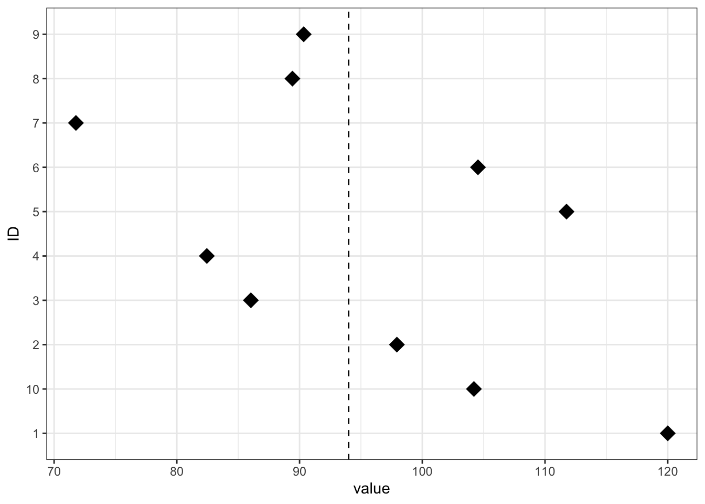
In the next graphs we are going to show not the full means, but school-specific estimates of deflections from the overall mean (over all the schools).
Our first model treats all schools completely independently. There is no information transfer between schools. We use reasonable priors (not very strong, but not very weak either) for mean and SD. This considerably narrows our estimates in schools where N is very small.
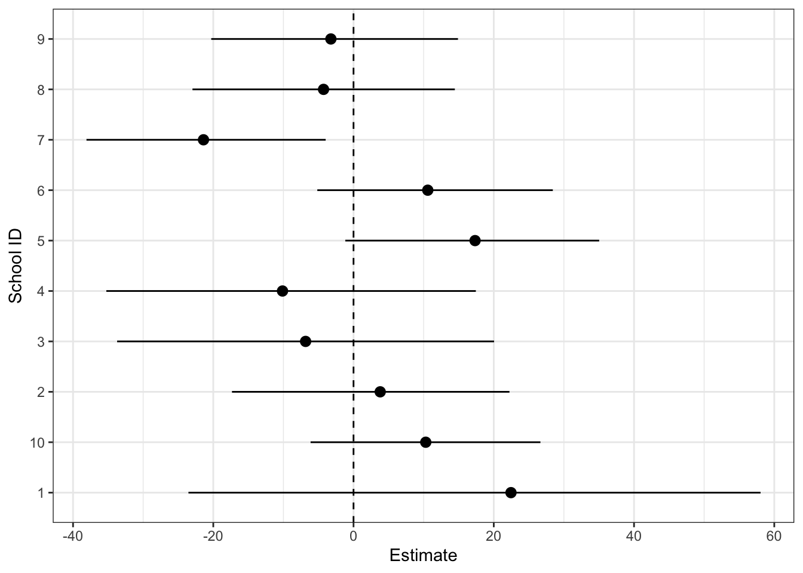
In school 1, where a single student took the test, thanks to the prior we still have a reasonably informative estimate for that school – we believe that this school could be somewhere from 25% below average to about 50% above average. With a single student it would be strange, if our estimate would be much more precise.
Next we present a model, where school means are completely independent, but school SD-s are completely pooled.
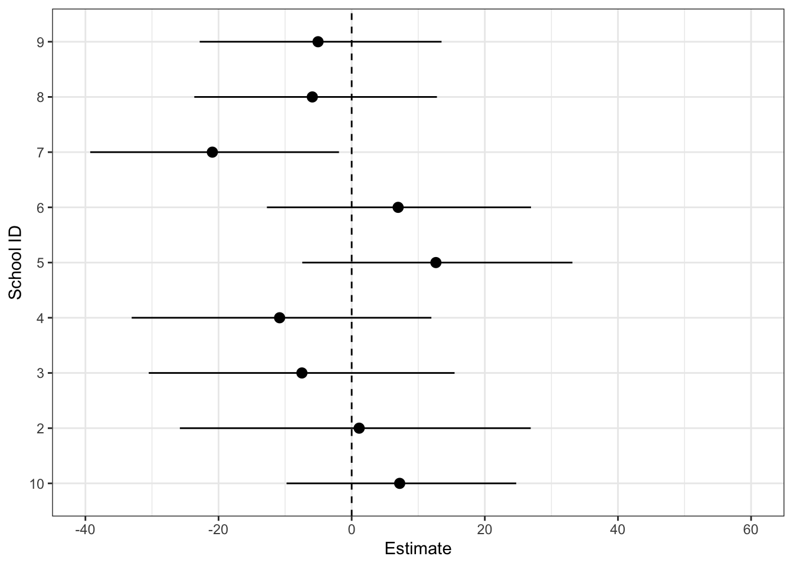
The pooling of variation information narrows our CIs a bit, but not that much.
And now a 2-level model, which partially pools information on the means, leading to shrinkage towards the global mean.
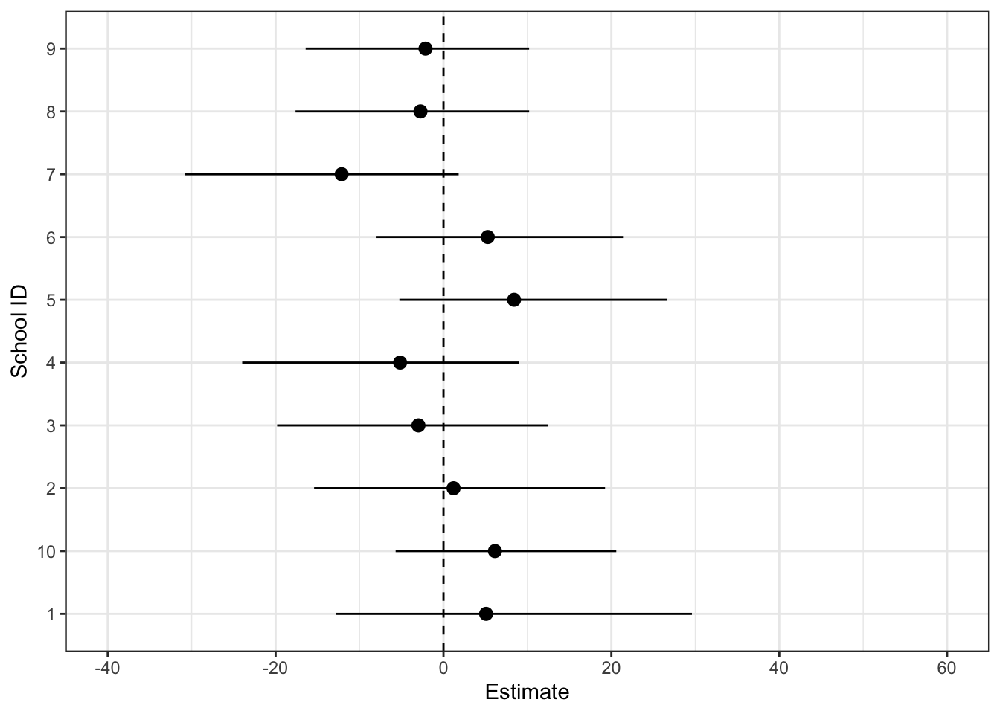
Here the CI-s are clearly narrower.
Finally we plot out the actual shrinkage for each school
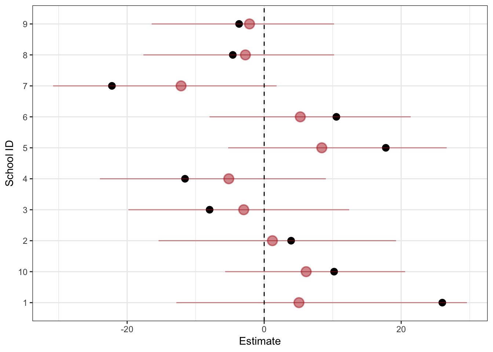
The school 1, which had a single datapoint, clearly gives the most shrinkage, while its CI-s are now very close to other schools with more data. School 2, which only has 2 datapoints, happens to be close to overall mean at the raw data level, and therefore gives the least shrinkage. (Shrinkage is shown by the red points with their estimation uncertainty cptured by 95% CI.)
9.2 7.2. Multilevel regression models: free intercepts
Now we add two predictors to our schools example: X - is students sex (male = 1 or female = 0) and S - is the school type (gymnasium or not). S is a group-level predictor, so there is only one S value per school, which is repeated in the table for all pupils in this school.
We start with converting the simple regression \(y = \alpha + \beta_1x + \beta_2s + \beta_3sch + error\) into a 2-level model. In brms notation this model is \(y \sim x + s + (1 \vert sch)\).
\[Within ~school ~j: y_i \sim \alpha + \alpha_j + \beta x_i + N(0, \sigma_y)\]
\[\alpha_j \sim \gamma_0 + \gamma_1 s_j+ N(0, \sigma_{\alpha})\]
The student-level predictor is in the 1st level and the school-level predictor is in the 2nd level of the model. There are j intercepts but only one slope for both predictors, which means that the model says that whatever the schools mean score, it will have the same difference between the sexes and the same dependence on the size of the school. We will relax this strong assumption in chapter 6.3. The 2nd level model models the J school means as dependent on the intercept and slope of the school size regressor. The multilevel model combines the J local models in two ways: first, the local slopes are the same in all J models. Second, the J intercepts are connected through the group-level model. The meaning of \(\sigma_y\) and \(\sigma_{\alpha}\) is the same as before (see chapter 6.1.), except the variance is estimated after conditioning for various predictors. Group-level predictors reduce the unexplained group-level variation and thus the group-level SD of \(\sigma_{\alpha}\), thus leading to more shrinkage and to more precise estimates of the group means, especially for groups with small N. Adding predictors at the individual and group levels typically reduces the unexplained variance at each level (adding a group-level predictor can also increase the unexplained variance).
9.3 7.3. Free intercepts and slopes
9.4 The variance-covariance matrix for classical regression
In typical classical regression settings the model \(y \sim N(\beta_0 + \beta_1x, \sigma)\) the variation, sigma, is modelled to be the same for each level of the predictor(s). We can write this out as sigma becoming a variance covariance matrix
Show code
$$ V = cov = \begin{equation}
\begin{pmatrix}
\sigma & 0 & \ldots & 0 \\
0 & \sigma & \ldots & 0 \\
\vdots & \vdots & \ddots & \vdots \\
0 & 0 & \ldots & \sigma
\end{pmatrix}
\end{equation}$$\[ V = cov = \begin{equation} \begin{pmatrix} \sigma & 0 & \ldots & 0 \\ 0 & \sigma & \ldots & 0 \\ \vdots & \vdots & \ddots & \vdots \\ 0 & 0 & \ldots & \sigma \end{pmatrix} \end{equation}\] where sigma-s on the diagonal denote SD-s and zeros denote correlations \(\rho\) between predicted values at different predictor values. These fixed zero-correlations mean that the model knows data to be independent. The model also knows that all sigmas are equal, hence the homogeneity of variance.
Now, in the multilevel model we have dissected the 2nd level variation between two sigmas, one for the variation of intercepts, and another for the variation of slopes, so the matrix loses its zero-correlations and gets a parameter for each correlation to be estimated. These parameters are identical below and above the diagonal of the matrix. The simple case of sigmas for intercept and slope is shown right below.
9.5 The free intercept, free slopes model
First the model without school-level variable S – \(y \sim 0 + x + (x \vert sch)\) in brms syntax.
\[y_i \sim N(\alpha_{j[i]} + \beta_{j[i]} x_i, \sigma_y)\] \[\binom{\alpha_j}{\beta_j} \sim MVN(\binom{\mu_{\alpha}}{\mu_{\beta}}, \binom{\sigma_{\alpha}~~~~~\rho_{\sigma_{\alpha} \sigma_{\beta}} }{\rho_{\sigma_{\alpha} \sigma_{\beta}} ~~~~~ \sigma_{\beta}})\]
where \(\rho\) models between-the-groups correlation. Here we have the two 2nd level regressions (the 1st of which treats intercepts as the predicted variable and the 2nd does the same for slopes) modelled within the same equation, with correlations between the two predicted variables (intercepts and slopes) modelled. This means that we model the school specific intercepts and slopes together, so that there is also partial pooling of information between intercepts and slopes, and we estimate the correlation between mean scores and the rate of change in the mean scores accross schools. The likelihood here is multivariate normal (MVN).
If we have population-level intercept and slope in the model like this \[y_i \sim N(\alpha_i + \alpha_{j[i]} + \beta_i + \beta_{j[i]} x_i, \sigma_y)\] then the second level gets to be simpler:
\[\binom{\alpha_j}{\beta_j} \sim N(\binom{0}{0}, \binom{\sigma_{\alpha}~~~~~~~~~\rho_{\sigma_{\alpha} \sigma_{\beta}} }{\rho_{\sigma_{\alpha} \sigma_{\beta}} ~~~~~~~~~ \sigma_{\beta}})\]
The brms notation is \(y \sim x + (x \vert sch)\).
We now expand this 2nd part of the model to include the school-level predictor S.
\[\binom{\alpha_j}{\beta_j} \sim N(\binom{\gamma_0{^ \alpha} + \gamma_1 {^ \alpha} u_j}{\gamma_0{^ \beta} + \gamma_1 {^ \beta} u_j}, \binom{\sigma_{\alpha}~~~~~~~~~\rho \sigma_{\alpha} \sigma_{\beta}}{\rho \sigma_{\alpha} \sigma_{\beta} ~~~~~~~~~ \sigma_{\beta}})\] Its brms version reads \(y \sim x + s + x:s + (x \vert sch)\), so we have an interaction between the school type and sex of the pupil. Varying slopes can be considered as interactions between group indicators and an individual-level predictor.
Sometimes it might be reasonable to allow the slope, but not the intercept, to vary. When J separate experiments are performed on samples from a common population, with each experiment randomly assigning a control condition to half its subjects and a treatment to the other half, while the “controls” are the same for each experiment but the “treatments” vary. Then we remove the intercept from the group of coefficients that vary by group \(y \sim T + (T - 1 \vert sch)\) where T is the treatment variable \({0, 1}\). Now we get a different treatment effect for each school.
And here is a model with an individual-level predictor x: \(y \sim x + T + (T + x:T - 1 \vert sch)\), where the treatment effect and its interaction with x vary by school
There is nothing wrong with a high correlation between the \(\alpha\)s and \(\beta\)s. As with interaction models in classical regression, centering the predictor(s) may not remove these correlations, but the correlation is easier to interpret.
9.6 Recap: multilevel structures
Imagine that you have student scores from 10 schools. If score variable is y, then the model is
for j-th school:
\[y_i = \beta_{j} + N(0, \sigma) ~~or~~ y_i \sim N(\beta_j, \sigma)\]
or
\[y_i \sim N(\mu, \sigma)\] \[\mu = \beta_j\]
where i is the student index (a.k.a. row index in the data table) and j {1 … 10} is the school index. There are 10 separate models, one for each school, where parameters \(\beta_1\) to \(\beta_{10}\) are schools-specific mean scores and the parameter \(\sigma\) marks the identical SD of scores for all 10 schools. If we have 10 intercepts/means, then we can imagine the distribution of intercepts as
\[\beta_j \sim N(\mu_{mean}, \sigma_{mean})\]
The distribution has 2 parameters, \(\mu_{mean}\) and \(\sigma_{mean}\). This meta-distribution of means can be constructed from observed data means, but it also doubles as a prior for the school-specific intercept. This leads to a situation, where in the model we have an ordinary prior for \(\sigma\), where the parameters are fixed, based on our prior knowledge that is independent of data. And then we have this strange prior where instead of fixed coefficients we have parameters to be estimated on data. This prior we call the adaptive prior, because it adapts its shape on the data. So the full model becomes
\[y_i \sim N(\beta_j, \sigma)\] \[\beta_j \sim N(\mu_{mean}, \sigma_{mean})\] and the priors for \(\sigma, \sigma_{mean}, \mu_{mean}\), where the last 2 priors are meta-priors. They are meta, because these priors are set on the parameters of another (adaptive) prior. In brms notation this is
Show code
score~0 + (1|school)
#or
score~(1|school) - 1In this model interesting stuff starts to happen. The adaptive prior is fitted on data (and on its meta-priors, of course), which means that information moves up from the individual school level into the 2nd level adaptive prior. But then, as this is still a prior, it is also used for fitting the 1st level model of individual schools. So the information also flows the other way, from the adaptive prior down to individual schools, whose score means are calculated partly on information encoded in the shape of the adaptive prior. Because of this up-and-then-down information flow, the data coming from a school, which is used to estimate the mean score of this particular school, is also used to fit the adaptive prior. Thus information coming from any school affects the estimation of all other schools means, to some extent. So every school has an influence on all other schools. This partial pooling of information between school means leads to shrinkage of the \(\beta_j\) coefficients towards a common mean.
As with ordinary priors, the strength of the influence that an adaptive prior has on the final estimation depends both on how much information we put into this prior, as well as on how much information is contained in data for every individual school (and by implication, in the likelihood function). As the adaptive prior gets its information from school means, the more schools there are, the more informative (narrower) this prior will be. Also, the less variation there is between the school means, the narrower the adaptive prior will be, and thus the more influence (more shrinkage) it will have on the school-specific posteriors. On the other hand, the more scores go into the likelihood for a given school, and the less variation there is within these scores, the more will the posterior depend on the schools own scores, which means that there will be less shrinkage for these particular schools.
We can reduce the number of parameters that are estimated by providing a common intercept \(\beta_0\) for all schools, to which individual school-specific intercepts are then added to yield a schools mean score (mean score for j-th school = \(\beta_0 + \beta_j\)).
\[score \sim N(\beta_0 + \beta_j, \sigma)\] \[\beta_j \sim N(0, \sigma_{mean})\] and priors for \(\sigma, \beta_0, \sigma_{mean}\).
There are j - 1 parameters less in this otherwise equivalent model, and the brms notation is
Show code
score~1 + (1|school)
#or
score~(1|school)Next we relax the stupid assumption that all schools have identical SD of scores. Now we have 2 adaptive priors, one of which models the distribution of mean scores for each school and the other the distribution of SD-s of scores for each school. Of corse both distributions, modelled as normal, have their own mu and sigma parameters.
\[score \sim N(\mu, \sigma)\] \[\mu = \beta_j\] \[\sigma = \beta_{s[j]}\] \[\beta_j \sim N(\mu_{mean}, \sigma_{mean})\] \[\beta_{s[j]} \sim N(\mu_{sd}, \sigma_{sd})\]
and the priors for \(\mu_{mean}, \sigma_{mean}, \mu_{sd}, \sigma_{sd}\). We can get rid of the \(\mu_{mean}\) and \(\mu_{sd}\) parameters as we did before.
Now the respective brs models are
Show code
bf(score~0 + (1|school), sigma~0 + (1|school))
#and
bf(score~(1|school), sigma~(1|school))So now we start our model description with the likelihood, followed by 2 re-definitions of parameters, followed by 2 adaptive-priors, followed by 4 ordinary priors, followed by 4 meta-priors.
If in addition we want to model the correlations between the mean scores and within-school variarion in scores, then the model becomes
Show code
bf(score~(1 |id| school),
sigma~age + (1 |id| school))Where “id” denotes any string that must be the same in both submodels.
We next add a student-level predictor: students age. For modelling convenience, we standardize the ages, so that they would have a mean = 0 and sd = 1. Now, we can model these data for the 1st school as
\[score = \beta_0 + \beta_{sch1} + b_{age} \times age + N(0, \sigma)\].
For the next school there will be another equation
\[score = \beta_0 + \beta_{sch2} + b_{age} \times age + N(0, \sigma)\]
and so on. Again, while there are parameters that are the same for each school (\(\beta_0\) - the common intercept, \(b_{age}\) - the slope for the age variable, and \(\sigma\) - the common SD for all schools), each school has its own intercept. So we have 10 regression equations, where there are 10 equation-specific parameters (the beta-schools) and 3 parameters (\(\beta_0\), \(\beta_{age}\) and \(\sigma\)) common to all equations. In this equation the 2nd schools intercept (mean score if age is at its mean level, e.g. age = 0) equals \(\beta_0 + \beta_{sch2}\). (This is why we standardized the age-variable.) And the mean score for the 2nd school, if the age is two years over the mean age, equals \(\beta_0 + \beta_{sch2} + 2 \times \beta_{age}\).
As we have 10 beta-schools coefficients, we can again build a distribution of school intercepts, which is the same as saying that we can build a distribution of school means for the situation where age = 0 = mean(age).
So far the picture looks like this
for each school:
\[score \sim N(\mu, \sigma)\] \[\mu = \beta_0 + \beta_j + \beta_{age} \times age\] \[\beta_j \sim N(0, \sigma_{means})\]
and priors for \(\sigma_{means}\), \(\beta_{age}\), \(\beta_0\), and \(\sigma\).
These are called the meta-priors, as they are priors set on parameters of another prior. Now we have the full system.
Now lets make the SD-s vary by school as well. Thus we have 2 adaptive priors: we have the distribution of school-means and we have another distribution of school-SDs. So the model loses the common \(\sigma\) and at the same time gains another adaptive prior and 2 additional meta-priors.
for each school: \[score \sim N(\mu, \sigma)\] \[\mu = \beta_0 + \beta_j + \beta_{age} \times age\] \[\sigma = \beta_{0.s} + \beta_{j.s} + \beta_{age.s} \times age\] \[\beta_j \sim N(0, \sigma_{mean})\] \[\beta_{j.s} \sim N(0, \sigma_{sd})\]
and priors for \(\sigma_{sd}\), \(\sigma_{mean}\), \(\beta_{age.s}\), \(\beta_{age}\), \(\beta_{0.s}\), and \(\beta_0\).
So now we start our model description with the likelihood, followed by 2 re-definitions of parameters, followed by 2 adaptive-priors, followed by 4 ordinary priors, followed by 2 meta-priors.
In this model we have liberated the intercepts to vary between schools. In brms notation the models are
Show code
score ~ age + (1 | school)and
Show code
bf(score~age + (1 | school),
sigma~age + (1 | school))We can, and will, as easily liberate the slopes as well, by giving them adaptive priors of their own. Then we will have our final model with 4 adaptive priors and with the corresponding 8 meta-priors. In brms notation this model looks like this
Show code
bf(score~age + (age || school),
sigma~age + (age || school))In this model both intercepts and slopes vary accross schools. Two vertical lines mean that the correlation between schools intercepts and slopes (mean score at mean age vs. change in the mean score when age is changed) is not modelled. We can incorporate this correlation into the model like this
Show code
bf(score~age + (age | school),
sigma~age + (age | school))In this model we also estimate the correlation between the intercepts and slopes of the school means (the 1st submodel) and simultaneously the correlation between intercepts and slopes of the school SDs (the 2nd submodel). If the schools means submodel intercepts and slopes are positively correlated, then the schools with higher scores also tend to have faster growth of scores, as the students get older. If the schools SD submodel intercepts and slopes are positively correlated, then the schools with higher within-school variation between scores also tend to have faster growth of this variation, as the students get older.
We can add another layer of correlations to this model like this
Show code
bf(score~age + (age |id| school),
sigma~age + (age |id| school))Where “id” denotes any string that must be the same in both submodels. Now we estimate the same correlations as before, but in addition also the correlations between the submodels. For instance there might be a negative correlation between schools mean scores and variation within schools so that schools that have higher mean scores tend to have less variation between the scores.
And finally, lets incorporate a school-level variable Z, school size (the nr of students) into the regression. For simplicity we are using the free intercept model that assumes equal variance for all schools.
for each school:
\[y_i \sim N(\mu, \sigma)\] \[\mu = \beta_0 + \beta_j + \beta_{age} \times age_i\] \[\beta_j \sim N(\mu_{mean}, \sigma_{mean})\] \[\mu_{mean} = \beta_{mean} + \beta_z \times z_j\]
and the priors for every parameter and meta-parameter: \(\beta_0, \beta_{mean}, \beta_z, \beta_{age}, \sigma_{mean}, \sigma, \beta_z:\beta_{age}\).
In brms notation:
Show code
score~age + z + age * z + (1|school)As you can see, this is an interaction model, where the z variable, which is modelled at the 2nd level, interacts with the age variable, which is modelled at the first level. The group-specific variables have a single value per group, and they naturally belong to the group-level model.
Finally, as a comparison, lets have another look at a single-level interaction model:
\[y_i \sim N(\mu, \sigma)\] \[\mu = b_0 + \gamma \times x + b_2 \times Z \] \[\gamma = b_1 + b_3 \times Z\]
and priors for 4 betas and 1 sigma. This model can be re-written in a single line as \(y = b_0 + b_1X + b_2Z + b_3XZ + N(0, \sigma)\), as any multilevel model can be turned into a single-line expression. The main goal in doing an interaction model vs a multilevel model is basically the same - to model how the slope on X varies by the levels of the Z variable, and the main difference from multilevel models is that in the single-level interaction model the influence of Z on X is modeled as deterministic. Thus, there are no adaptive priors, no partitioning of variation, no partial pooling of information, and no shrinkage.
9.7 7.4. Prediction from multilevel models
predict the test score for a schools males (x = 1) in j = 6. Conditional on the model parameters, the predicted value has a mean of \(\alpha_{6} + \beta\) and \(\alpha\) sd of \(\sigma_y\).
\[y \vert \theta \sim N(\alpha_6 + \beta x, \sigma_y)\]
where \(\theta\) represents the vector of model parameters. to predict the score for a male student, but in an unmeasured school, we generate a new school-level error term, \(\alpha\), which we sample from its \(N(\gamma_0 + \gamma_1 u_j, \sigma_{\alpha})\) distribution. The prediction will be less certain than for a student in a measured school, since we lack information about \(\alpha\). From the fitted model, the within-school (residual) sd is \(\sigma_y\), and the between-county sd is \(\sigma_{\alpha}\). The score for a new student in a measured school can be measured to an accuracy of about +/- \(\sigma_y\). The score for a new student in an unmeasured school can be predicted to an accuracy of \(\sqrt{\sigma_y + \sigma_{\alpha}}\). The equation \(\frac{\sqrt{\sigma_y + \sigma_{\alpha}}}{\sigma_y} - 1\) gives the percentage by which a predictive interval for a new student in an unmeasured school is wider than that of a new student in a measured school.
In principle there are 3 ways how to predict from multi-level models. When we talk about average marginal effects, we have to be explicit about what kinds of averages we are working with. We can calculate
Global grand mean
Conditional effects for existing groups
Conditional effects for a single hypothetical group, either typical or brand new.
For posterior prediction for a global grand mean, we calculate the mean score while ignoring any school-specific deviations of the intercept or slope. We do not incorporate school-specific information from the model into the predictions. The resulting average transcends school differences. Although the global mean only uses the “fixed” effects part of the model, these fixed effect estimates are themselves conditional on the random effects, so you still end up with a conditional prediction.
Show code
sch <- read_csv("data/schools.csv")
sch$school <- as.character(sch$school)
sch$sex <- as.character(sch$sex)
l8_m1 <- brm(score1~sex+ (sex|school), data=sch, file="models/l8_m1")
conditional_effects(l8_m1)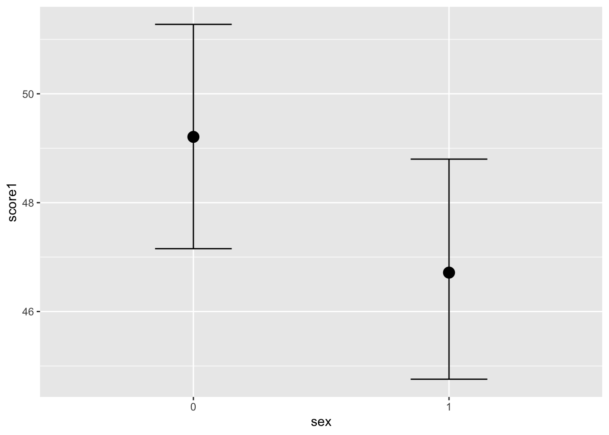
We must include re_formula=NA explicitly, so that group level effects are ignored and school variable id is not asked for in the newdata argument.
Show code
nd1 <- data.frame(sex=c("0", "1"))
pr1 <- fitted(l8_m1, re_formula=NA, newdata = nd1) %>% as.data.frame()
bind_cols(nd1, pr1) sex Estimate Est.Error Q2.5 Q97.5
1 0 49.20666 1.036215 47.15468 51.27576
2 1 46.72225 0.995492 44.75680 48.80006and the overall effect size is …
Show code
nd1 <- data.frame(sex=c("0", "1"))
pr1 <- posterior_epred(l8_m1, re_formula=NA, newdata = nd1) %>% as.data.frame()
posterior_summary(pr1$V1 - pr1$V2) Estimate Est.Error Q2.5 Q97.5
[1,] 2.48441 0.667096 1.215459 3.850945Posterior prediction for same clusters: When working with the same clusters that were used to fit the model, varying intercepts are just parameters. The only trick is to ensure that you use the right intercept for each case in the data. Instead of calculating a grand mean without any group information, we can incorporate school effects into our predictions. We can create conditional effects for specific schools that already exist in the data, incorporating their school-specific deviations in slope and intercept.
we feed brms new data that does include one or more schools that are already in the data, and we tell it to incorporate the random effects into its predictions by including re_formula = NULL.
We can also be more explicit about which group effects to include. When using re_formula = NULL, all group effects are included. If we made a model with both region and year effects, for instance, and only wanted to predict using the region effects, we could use \(re_formula = \sim (1 \vert region)\). Or if we do not want to remember that NULL means “everything”, we could also just use \(re_formula = \sim (1 \vert region)\) on our basic model with just school effects. It is all the same.
for predicting the mean scores for school no 20920:
Show code
nd1 <- data.frame(expand_grid(school= "20920", sex=c("0", "1")))
pr1 <- fitted(l8_m1, newdata = nd1, re_formula = NULL) %>% as.data.frame()
bind_cols(nd1, pr1) school sex Estimate Est.Error Q2.5 Q97.5
1 20920 0 38.81664 4.420023 29.96680 47.27831
2 20920 1 37.08608 4.213951 28.70682 45.34600and we create 4000 new students for school no. 20920. re_formula = NULL! these are “predicted draws from posterior predictive distribiution”
Show code
nd1 <- data.frame(expand_grid(school= "20920", sex=c("0", "1")))
pr1 <- posterior_predict(l8_m1, newdata = nd1, re_formula = NULL) %>% as.data.frame()
colnames(pr1) <- c("0", "1")
posterior_summary(pr1) Estimate Est.Error Q2.5 Q97.5
0 38.80425 12.31615 14.55952 62.68050
1 37.13416 11.86526 13.98128 60.24196And this is the prediction of the mean scores for the same schools - see how the intervals for the mean are much narrower than for individual students. these are “fitted draws from posterior predictive distribution”.
Show code
nd1 <- data.frame(expand_grid(school= "20920", sex=c("0", "1")))
pr1 <- posterior_epred(l8_m1, newdata = nd1, re_formula = NULL) %>% as.data.frame()
colnames(pr1) <- c("0", "1")
posterior_summary(pr1) Estimate Est.Error Q2.5 Q97.5
0 38.81664 4.420023 29.96680 47.27831
1 37.08608 4.213951 28.70682 45.346009.7.1 Conditional effects for a single new hypothetical group, either typical or brand new
Making predictions for new clusters is a problem of generalizing from the sample. there is no unique procedure for this. As we want a single mean that also includes regional effects, we will create a new school and make predictions based on it. The thing to do depends upon the causal model, the statistical model, and your goals. If we want a single mean that also includes school effects, we simulate a hypothetical school and make predictions based on it. The difference is in how we construct this new school and think about its variation. We can build its SD based on an average SD of the existing schools, or we can simulate a new SD.
To do this, we need to include the new school in the newdata argument, but we need to include a name of a school that does not exist (or alternatively, school = NA). To make these extrapolated predictions, include allow_new_levels = TRUE. We include the random effects for school by setting re_formula = NULL.
Finally, we specify how to handle the variation for this imaginary new group. We either draw from the variation in all the other schools by setting sample_new_levels = "uncertainty" (the default), or we simulate a whole new kind of schools uncertainty using sample_new_levels = "gaussian". The documentation is in ?brms::prepare_predictions.
In summary, we have these two general approaches:
- Create a hypothetical school that is based on the observed variation in the existing schools with
school = "a"in the new data andre_formula = NULL,allow_new_levels = TRUE,sample_new_levels = "uncertainty"in the prediction function. This creates a “typical” school. How does “uncertainty” include group-level uncertainty based on the variation of the existing levels? “uncertainty” fullfills a similar purpose as “gaussian” but instead of using a gaussian distribution to sample from (which may or may not be a good representation of the group-level effects distribution), we sample from the distribution directly implied by the old levels in a bootstrap kind of fashion. Suppose grp has 3 levels, call them a, b, and c and suppose we have 5 posterior draws for these levels:
a: 1 2 3 4 5
b: 6 7 8 9 10
c: 11 12 13 14 15
Then, in “uncertainty”, for the first posterior draw, we choose one from (1, 6, 11), in the second we choose one from (2, 7, 12), in the third we choose one from (3, 8, 13), etc. If we had enough levels of grp and those levels were normally distributed, then this approach would come to very similar conclusions as the “gaussian” approach.
- Create a hypothetical school that is completely new with
school = "a"in the newdata andre_formula = NULL,allow_new_levels = TRUE,sample_new_levels = "gaussian". This creates a “brand new” school. “gaussian”, for a term like (1 | grp), returns something likernorm(n_draws, 0, sd_grp__Intercept).
As a third possible approach, maybe you simple want the new group to be as typical as possible for the old groups. Then simply choose an old group that is closest to the mean or median or whatever statistic you prefer of all old groups used to fit the model, and predict for this group.
We predict a mean score for new schools.
Show code
nd <- data.frame(expand_grid(school="a", sex=c("0", "1")))
pr <- fitted(l8_m1, newdata = nd, re_formula = NULL,
allow_new_levels=TRUE, sample_new_levels = "gaussian") %>% as.data.frame()
pr Estimate Est.Error Q2.5 Q97.5
1 48.99719 7.420108 34.73443 63.47877
2 46.48395 7.301380 32.65760 60.746839.8 7.5 Multi-level change-over-time models
Here the first level is individual level time points and regressors that have different values at different time points. The grouping factor is the individuals id and the 2nd level regressors do not vary within individuals. If there is an experimental treatment, that is applied to some individuals, this would be a 2nd level regressor, that is then put into interaction with time variable.
Show code
y ~ time + treatment + time:treatment + (time | id)This model naturally incorporates auto-regressive structures and unequal variance (heteroscedasticity) within individuals, so it is preferable to single-level autoregressive ar() models.
9.8.1 single-level autoregressive models and ARMA
An autoregressive model is a model where a value from a time series is regressed on previous values from same time series.
\[y_t=\alpha+\beta_1 y_{t-1}+\epsilon_t\]
In autoregressive models the independence of data points – remember those zeros in the variance-covariance matrix – is violated. Instead of a bunch of zeros, we now have to model a fairly simple pattern of correlations that decreases over time. So this situation is easier that modelling each correlation with its own rho-parameter, as we do in the multi-level modelling paradigm. Also, this means that a full multi-level model can do the job of an autoregressive model!
Anyhow, in the simplest AR model, the first order autoregressive (AR1) structure, the exponent on the correlation between time-points declines linearly according to the time lag. Here we are also assuming stationarity, i.e. that the degree of correlation is dependent only on the lag and not on when the lag occurs. All lag 1 residual pairs will have the same degree of correlation, all the lag 2 pairs will have the same correlation and so on.
We could accommodate autoregressive data by fitting a model that incorporates a AR1 variance-covariance structure. Alternatively, we fit a model where the response variable from previous time period has become the predictor.
The order of an autoregression is the number of immediately preceding values in the series that are used to predict the value at the present time.
\[y_t=\alpha+\beta_1 y_{t-1}+\epsilon_t\]
The preceding model is a first-order autoregression, written as AR(1).
If we want to predict y using two previous time periods (y_t-1, y_t-2), the AR(2) model becomes:
\[y_t=\alpha+\beta_1 y_{t-1}+\beta_2 y_{t-2}+\epsilon_t\]
Show code
tapmised <- read_delim("data/tapmised/Sheet 3-Table 1.csv",
delim = ";", escape_double = FALSE, trim_ws = TRUE)
tt <- colSums(tapmised[,-1]) %>% as.data.frame() %>% rownames_to_column()
colnames(tt) <- c("yr", "events")
tt <- tt %>% mutate(yr = parse_number(yr))
#get_prior(formula = events~ yr + ar(yr, p=1), tt, family = poisson())
priors <- c(
prior("normal(0, 10)", class = "ar"),
prior("normal(0, 10)", class = "b")
)
m_ar1 <- brm(
formula = events~ yr + ar(yr, p=1, cov = TRUE),
data = tt,
family = poisson(),
prior = priors,
chains = 3,
file = "models/m_ar1",
#file_refit = "on_change",
save_pars = save_pars(all = TRUE)
)
tibble(yr = seq(from = 2002, to = 2025)) %>%
tidybayes::add_epred_draws(m_ar1) %>%
tidybayes::mean_qi(.epred) %>%
ggplot(aes(yr, .epred)) +
geom_line() +
geom_ribbon(aes(ymin = .lower, ymax = .upper), alpha = 1/5) +
theme_classic()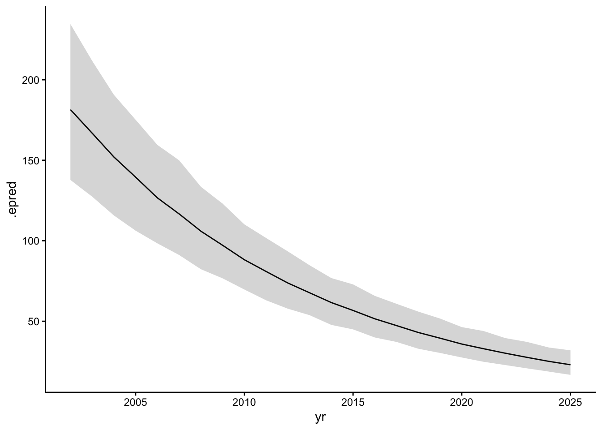
Show code
#get_prior(formula = events~ yr + arma(yr, p=1), tt, family = poisson())
priors <- c(
prior("normal(0, 10)", class = "ar"),
prior("normal(0, 10)", class = "b"),
prior("normal(0, 10", class ="ma")
)
m_arma1 <- brm(
formula = events~ yr + arma(yr, p=1, q=1, cov = TRUE), tt, family = poisson(),
prior = priors,
chains = 3,
file = "models/m_arma1",
#file_refit = "on_change",
save_pars = save_pars(all = TRUE)
)
tibble(yr = seq(from = 2002, to = 2025)) %>%
tidybayes::add_epred_draws(m_arma1) %>%
tidybayes::mean_qi(.epred) %>%
ggplot(aes(yr, .epred)) +
geom_line() +
geom_ribbon(aes(ymin = .lower, ymax = .upper), alpha = 1/5) +
theme_classic()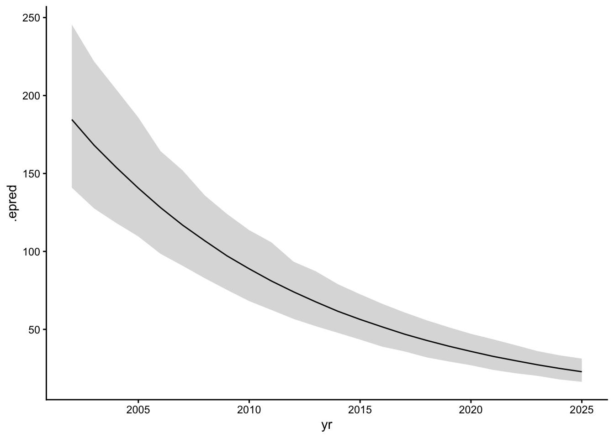
9.9 7.6. Overdispersed count models
When counts arise from a mixture of different Poisson or binomial processes, there will be thicker tails than in pure distributions. This is called over-dispersion (the variance of a variable is its dispersion). For a counting process, the variance is a function of the same parameters as the expected value. For example, the expected value of a binomial is Np and its variance is Np(1 - p). When, after conditioning on the predictors, the observed variance exceeds this amount, then an omitted variable is producing additional dispersion in the observed counts. Thus, ignoring over-dispersion leads to the same problems as ignoring a predictor variable (confounding, masking true effects).
9.10 Negative-binomial or gamma-Poisson.
A negative-binomial likelihood, also known as gamma-Poisson, assumes that each Poisson count observation has its own rate. It estimates the shape of the gamma distribution to describe the Poisson rates across cases. We assume that each event has its own rate or \(\lambda\). The distribution of these lambdas is described by the Gamma distribution. So, the gamma distribution does not describe our data, but the rate parameters of N Poisson distributions, which we assume made our N data points.
dgamma() allows 2 parametrizations: shape (alpha)/rate (beta), and shape (alpha)/scale (1/alpha) where scale = 1/shape. As a third parametrization there is mean (mu)/shape (alpha).
In brms this is the model:
\[y_i \sim GammaPois(\mu, \alpha)\]
\[log(\mu) = \beta_0\]
Where \(\mu\) takes the place of \(\lambda\) for Poisson distribution. After fitting the model, the intercept (mu) should be back-transformed as \(exp(mu)\). The shape parameter is assigned a gamma(0.01, 0.01) prior by brms, based on shape/rate (\(\alpha\), \(\theta\)).
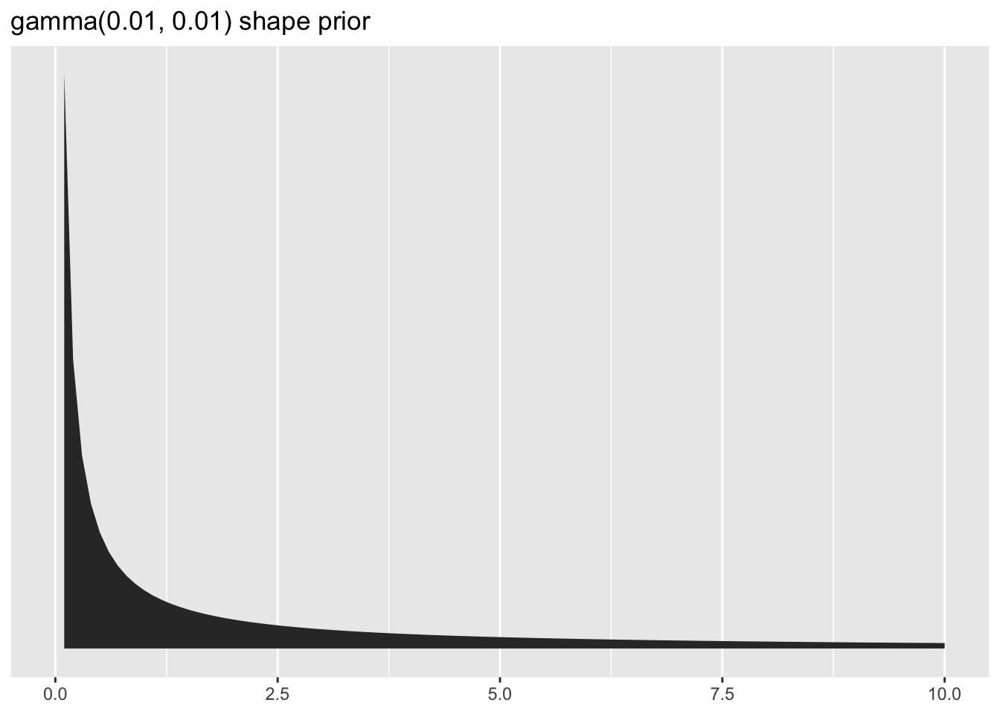
Brms family is family = negbinomial where mu is log-linked.
To use alpha (shape) and mu parameters estimates to visualize the model-implied gamma distribution of lambdas, we have to transform the \(\mu\) to theta (rate) like this: \(\theta = \mu/\alpha\); base::dgamma() takes theta and alpha (the shape/rate parametrization).
9.11 Beta distribution and beta-binomial distribution
9.11.1 The Beta prior
Beta story: You wait for 2 Poisson processes to arrive. The individual steps of each process happen at the same rate, but the first multistep process requires \(\alpha\) steps and the second requires \(\beta\) steps. The fraction of the total waiting time taken by the first process is Beta distributed. \(\alpha > 0\), \(\beta > 0\), covers interval 0 to 1. This makes it a good prior on probability scale.
PDF:
\[Beta(y) = \frac{y^{\alpha - 1}(1 - y)^{\beta - 1}}{B(\alpha, \beta)}\]
where B stands for the Beta function, which computes a normalizing constant. The base::dbeta() takes \(\alpha\) and \(\beta\) as shape1 and shape2 parameters.
\[E(X) = \frac{\alpha}{\alpha + \beta}\]
\[SD(X) = \frac{\alpha \beta}{(\alpha + \beta)^2(\alpha + \beta + 1)}\]
The uniform distribution is a special case of Beta distribution with \(\alpha = \beta = 1\).
If \(\alpha = \beta = 0\), the PDF cannot be normalized. This is used as an improper prior (Haldane prior). If \(\alpha = \beta = 0.5\), then we have the Jeffreys prior.
base::R
dbeta(x, shape1, shape2, ncp = 0, log = FALSE)
pbeta(q, shape1, shape2, ncp = 0, lower.tail = TRUE, log.p = FALSE)
qbeta(p, shape1, shape2, ncp = 0, lower.tail = TRUE, log.p = FALSE)
rbeta(n, shape1, shape2, ncp = 0)
Show code
x <- seq(0,1, length.out = 100)
y <- dbeta(x, 0.5, 0.5)
ggplot(data=NULL, aes(x=x, y=y)) + geom_line()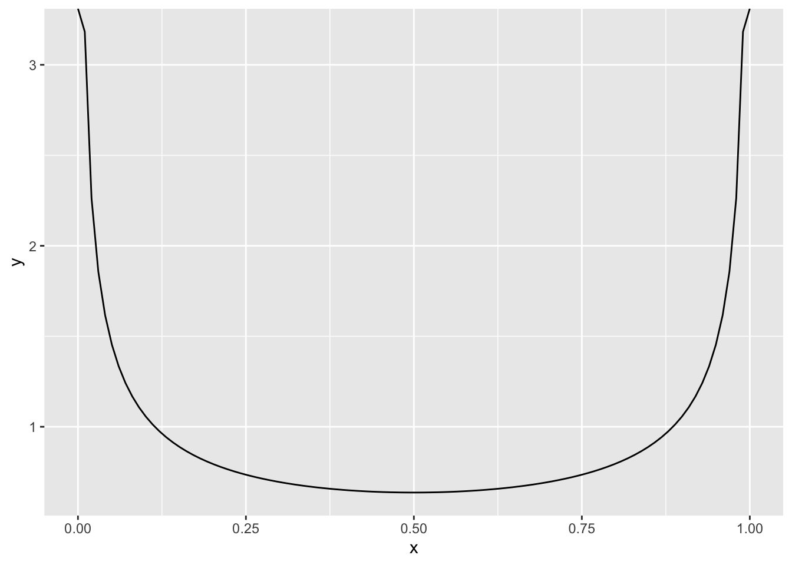
Show code
x <- seq(0,1, length.out = 100)
y <- dbeta(x, 0, 0)
ggplot(data=NULL, aes(x=x, y=y)) + geom_line()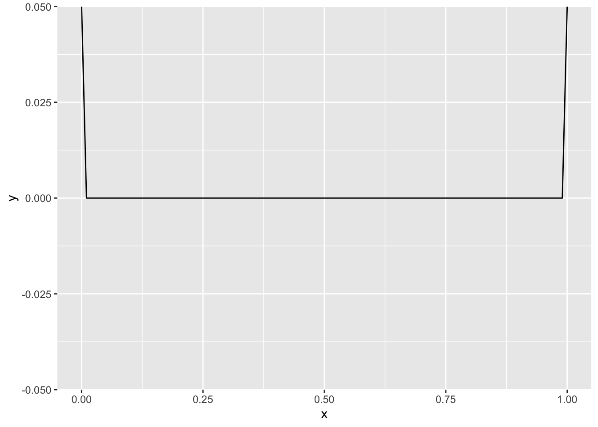
If we give binomial likelihood a beta prior, the the peak of the posterior is at \(\frac{\alpha + y}{\alpha + \beta + n}\) and it stays between the sample proportion \(y/n\) and the E(X) of prior \(\alpha /(\alpha + \beta)\). SD of posterior is given by \(\sqrt{\frac{(\alpha + y)(\beta + n -y)}{(\alpha + \beta + n) ^2(\alpha + \beta + n +1)}}\) and it approximates normal, as n increases. This approximation to normal happens sooner, if we use the logit link for the probability: \(log(p/(1-p))\).
The beta distribution can be reparametrized with location parameter \(\phi\) (the expeced value or mean) and concentration (a.k.a. spread) \(\kappa\). This parametrization is used by the brms. McElreath also uses this parametization, while renaming \(\phi\) as \(\mu\) and “pbar” and \(\kappa\) as “theta”. rethinking::dbeta2() is the relevant function. For a beta distribution with E(x) = 0.1, pbar = 0.1. To narrow the distribution, decrease the theta.
Show code
pbar <- .4
theta <- 5
ggplot(data = tibble(x = seq(from = 0, to = 1, by = .01)),
aes(x = x, y = rethinking::dbeta2(x, pbar, theta))) +
geom_area()+ scale_y_continuous(NULL, breaks = NULL) +
ggtitle("The Beta distribution",
subtitle = expression("Defined in terms of "*mu*" (pbar) and "*kappa*" (theta)"))\[\phi = \frac{\alpha}{\alpha + \beta}\]
\[\kappa = \alpha + \beta\]
\[\alpha = \phi \kappa\]
\[\beta = (1 - \phi ) \kappa\]
\[\sigma = \sqrt{(\phi(1-\phi)/(\kappa +1))}\]
To get back to alpha and beta parametrization (code from the Kruschke textbook):
Show code
betaABfromMeanKappa <- function(mean, kappa) {
if (mean <= 0 | mean >= 1) stop("must have 0 < mean < 1")
if (kappa <= 0) stop("kappa must be > 0")
a <- mean * kappa
b <- (1.0 - mean) * kappa
return(list(a = a, b = b))
}
betaABfromMeanKappa(0.4, 5)$a
[1] 2
$b
[1] 39.11.2 The Beta-binomial likelihood
A beta-binomial model is a mixture of binomial distributions. It is not the same as Beta distribution. It assumes that each binomial count observation has its own probability of success. We estimate the distribution of probabilities of success (as a beta distribution), instead of a single probability of success. Any predictor variables describe the shape of this distribution.
\[y_i \sim BetaBin(n_i, \hat p_i, \phi)\] \[logit(\hat p_i) = \alpha_{i}\]
Beta binomial has to be made a custom family in brms.
Show code
beta_binomial2 <- custom_family(
"beta_binomial2", dpars = c("mu", "phi"),
links = c("logit", "log"), lb = c(NA, 2),
type = "int", vars = "vint1[n]"
)
stan_funs <- "
real beta_binomial2_lpmf(int y, real mu, real phi, int T) {
return beta_binomial_lpmf(y | T, mu * phi, (1 - mu) * phi);
}
int beta_binomial2_rng(real mu, real phi, int T) {
return beta_binomial_rng(T, mu * phi, (1 - mu) * phi);
}
"
stanvars <- stanvar(scode = stan_funs, block = "functions")Instead using the \(y \vert trials() \sim\) , we are replacing trials() with vint(), which can only be used in custom families.
9.12 Zero-inflated models
the zero-inflated Poisson
\[y_i \sim ZIPoisson(p_i, \lambda_i)\] \[logit(p_i)= \alpha_p + \beta_p x_i\] \[log(\lambda_i)=\alpha_{\lambda} + \beta_{\lambda} x_i\] where both parameters in the likelihood get their own statistical model. In brms, \(p_i\) is denoted \(zi\). family = zero_inflated_poisson. To use a non-default (beta) prior for zi, indicate class = zi within prior(). zi is presented in the probability scale, unless there are predictors for zi in the model (while mu is always in the log-scale).
The tidybayes::parse_dist() takes the kind of string specifications you include in the brms::prior() and converts them into a format one can plot with.
Show code
priors <-
c(prior(beta(1, 1), class = zi),
prior(beta(2, 6), class = zi))
priors %>% tidybayes::parse_dist(prior) %>%
ggplot(aes(y = prior, dist = .dist, args = .args))+
tidybayes::stat_dist_halfeye(.width = .95)+
ylab(NULL)+ xlab(NULL)+ theme(legend.position = "none")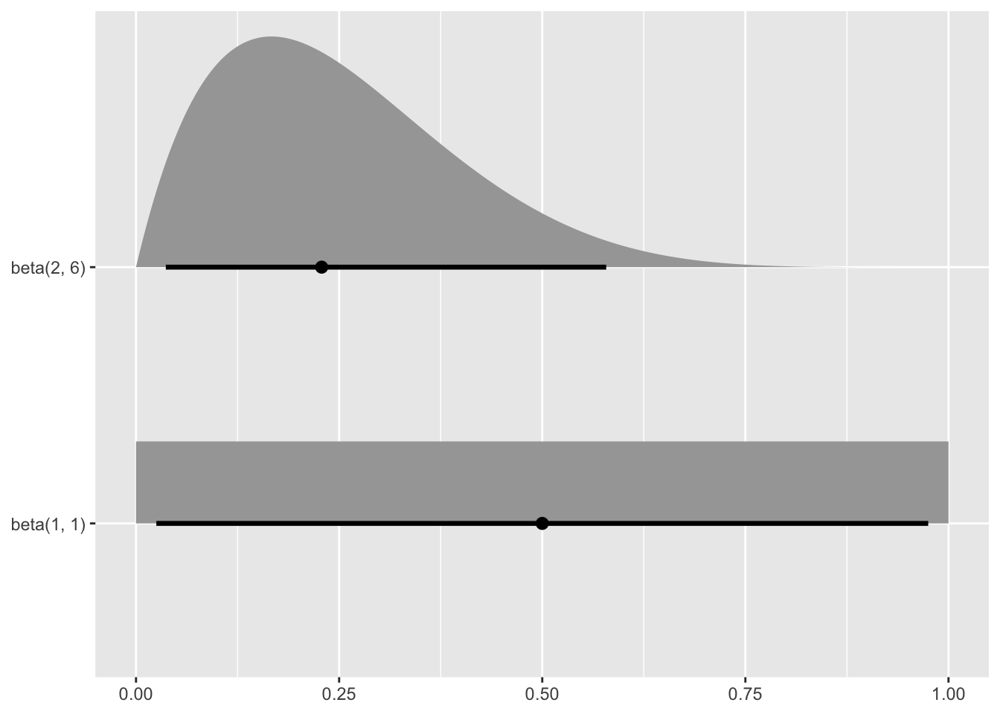